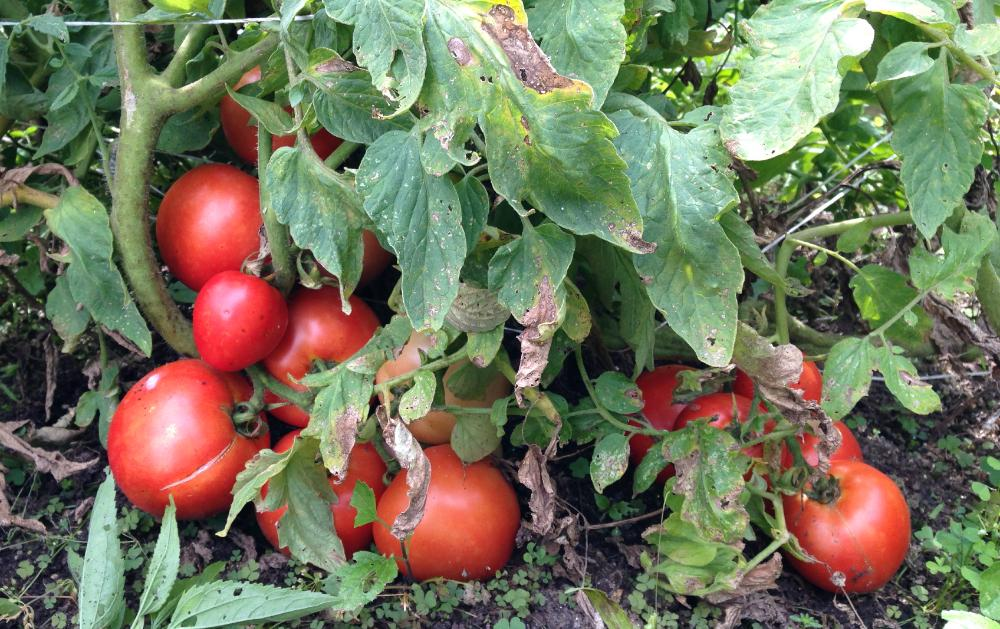
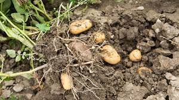
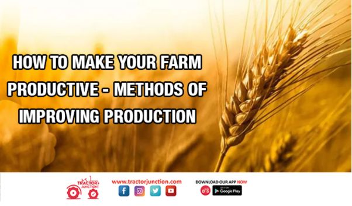

Tomato Plant Diseases and How to Stop Them
Initiatives Research and Science Jul 16, 2010 Written by Kayla Harless, People's Garden Intern.
Read More

Potato diseases & common pests: identification, prevention & control
There are lots of different potato diseases and pests to watch out for. Very often, however, problems can be avoided with a varied crop rotation.
Read More
Discovering New Horizons: 7 Days with Farmers
by Kashfia Mahfuz, Impact Measurement Officer 14 June, 2023
Read More


5 Ways to Make Your Farm Work Management Less Stressful and More Efficient
By Corrina Filipović | Blog, Digital Agriculture .
Read More